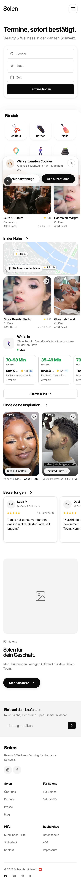
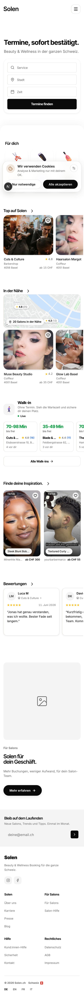
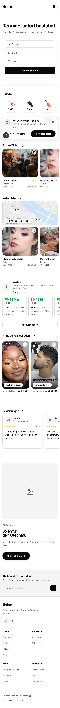

All three frames are your real homepage, captured live at phone width. Nothing is redrawn and no content moved: the only difference is the space between sections. Scroll inside each.
Every gap between sections is the same 8px, seven times in a row. Only the hero gets a different one (57px). So the page reads as one continuous run: nothing tells the eye where one thought ends and the next begins, and your locked 32px section rhythm is not what renders here. That is the gap this decision fills.
| Section, in order down the page | Height | Gap above |
|---|---|---|
| Hero, the booking search | 391 | first |
| For you | 251 | 57 |
| Top on Solen | 314 | 8 |
| Nearby | 474 | 8 |
| Walk-in | 304 | 8 |
| Inspiration | 408 | 8 |
| Reviews | 283 | 8 |
| For your business | 712 | 8 |



Every other rule we settled is about a component: a card's radius, an input's focus, a circle next to a square. Rhythm is the only rule that decides what a PAGE feels like, and there is no law for it, so a sweep across 134 screens would answer it 134 times by feel. Pick a cadence here and the sweep has one answer to apply. Whichever you pick becomes a number in the lockfile, not a vibe.